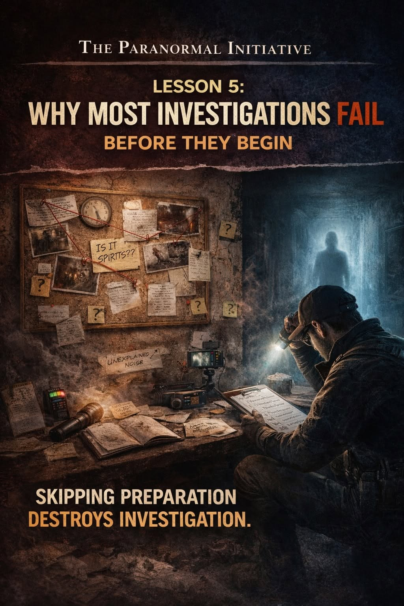

The Hard Truth
One of the hardest truths in paranormal research is this: most investigations fail before the investigation even starts.
Not because nothing happened, but because the groundwork was never properly established.
Investigator Development Series
Most investigations do not fail because nothing happened. They fail because the groundwork was never properly established.

One of the hardest truths in paranormal research is this: most investigations fail before the investigation even starts.
Not because nothing happened, but because the groundwork was never properly established.
Investigations fail when intake is rushed, claims are not clarified, patterns are not identified, environmental factors are ignored, and objectives are not defined.
When this happens, teams arrive on location with equipment but no direction.
Without preparation, teams begin asking random questions. They move from room to room without purpose. They react to every sound or shadow without context.
At that point, the investigation becomes reactive instead of structured, and reactive investigation leads to misinterpretation.
Without a clear understanding of what is being claimed, where it is happening, when it is happening, and under what conditions, there is no framework to test anything against.
Everything becomes possible, and when everything is possible, nothing is being properly evaluated.
A professional investigation requires preparation. It requires discipline. It requires restraint.
The goal is not to chase activity. The goal is to understand it.
Preparation is not separate from the investigation. Preparation is the investigation. Without it, the results will always be unreliable.